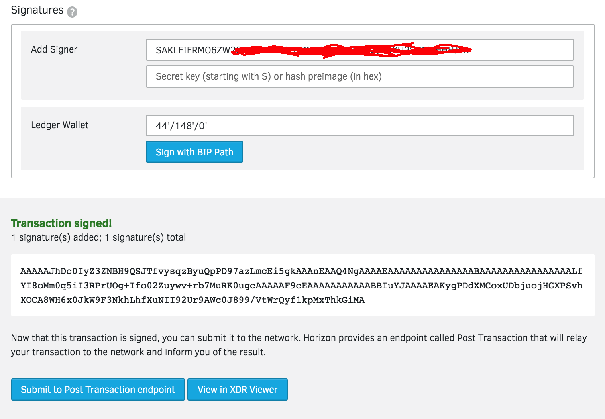
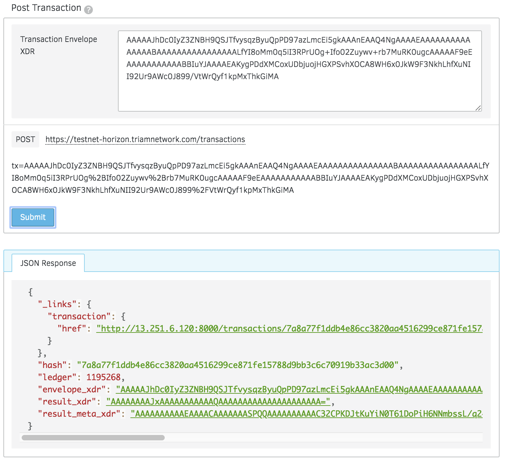
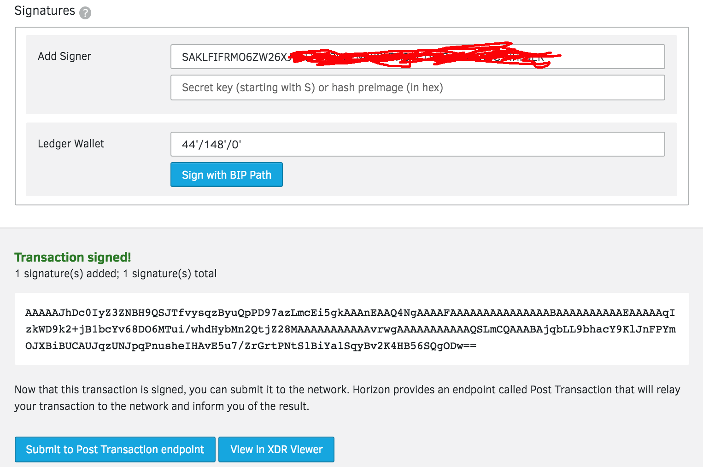
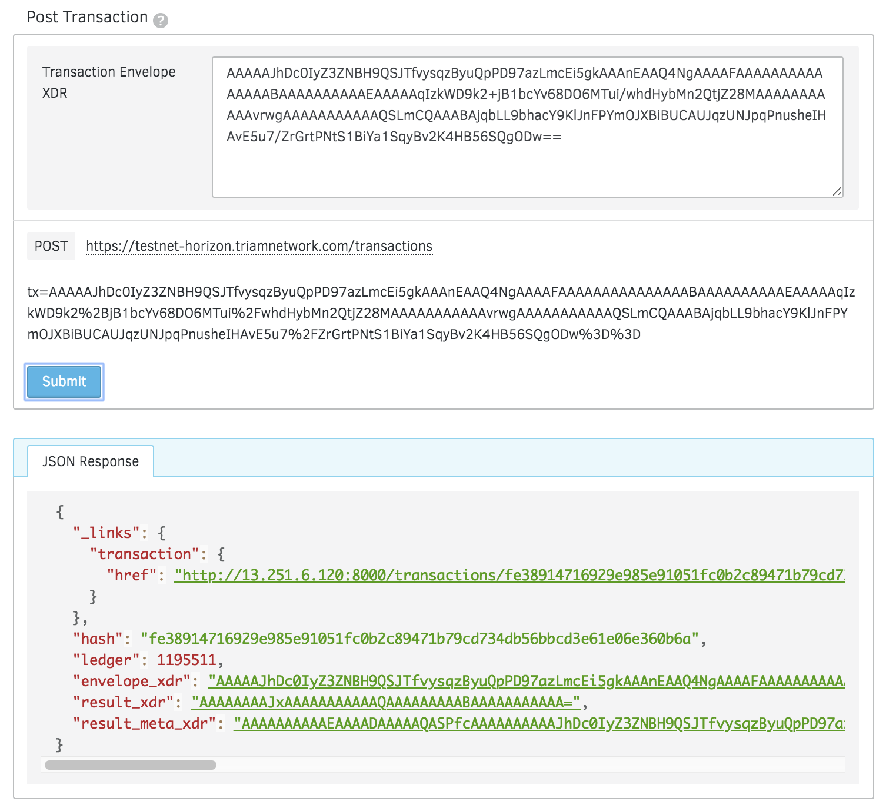
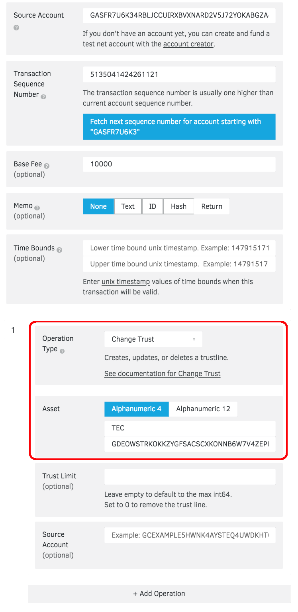
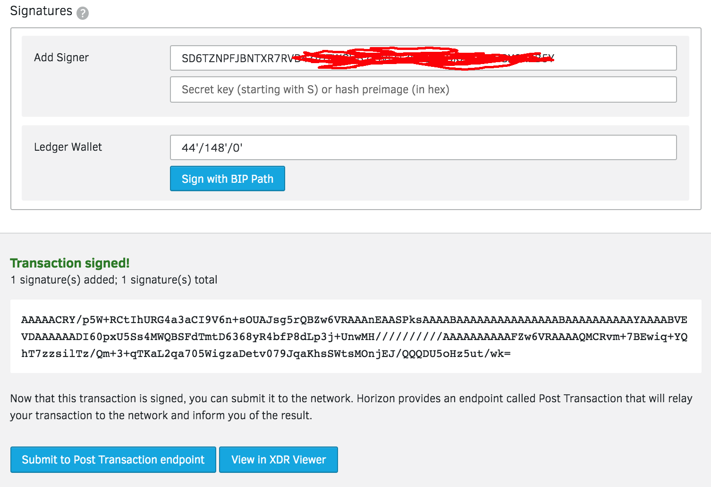
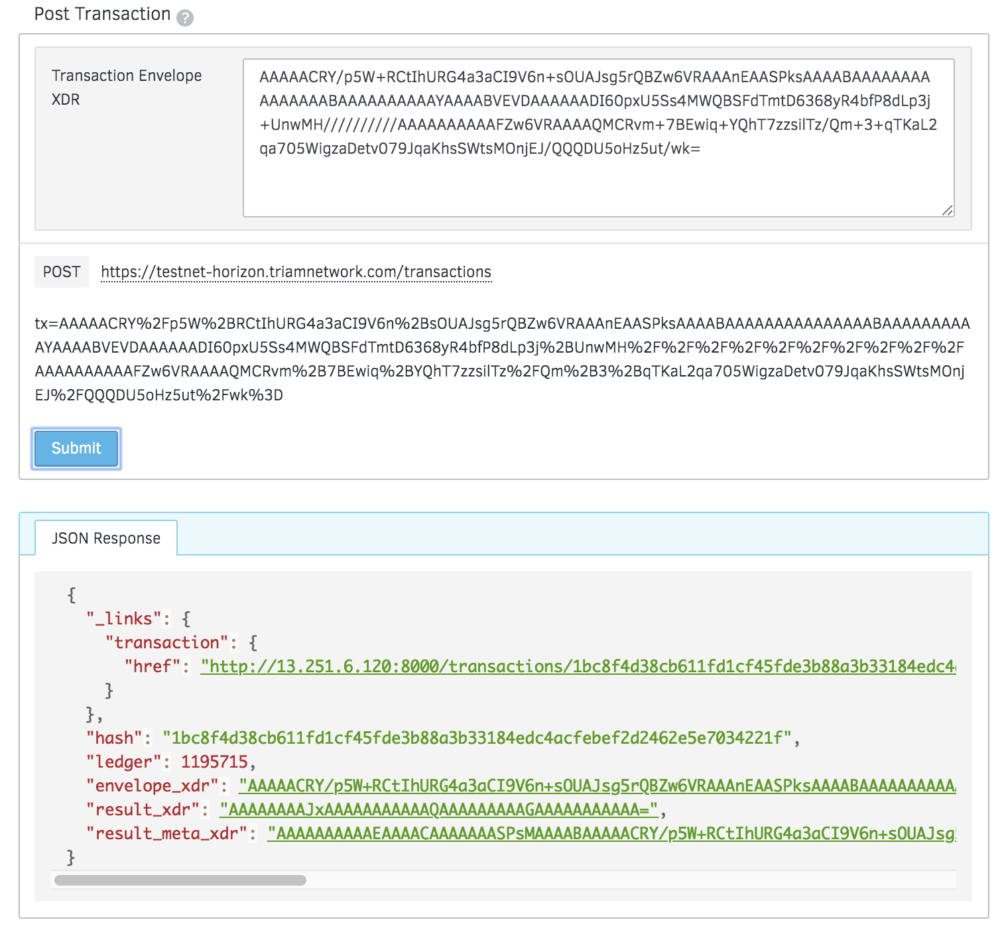
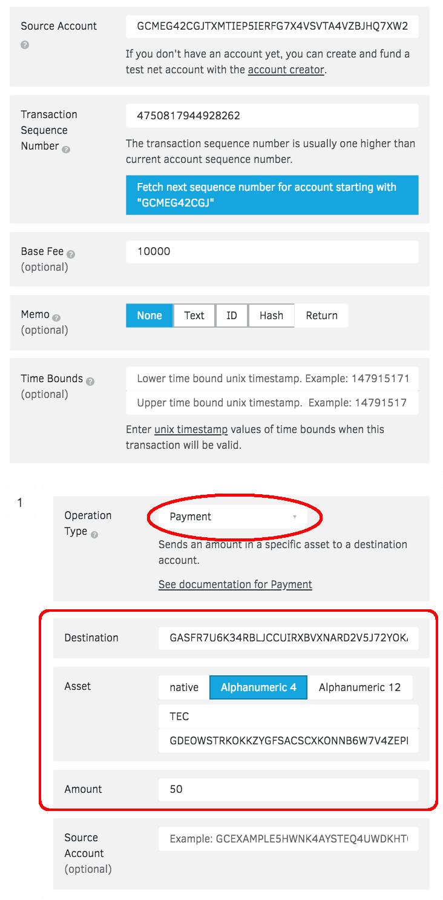
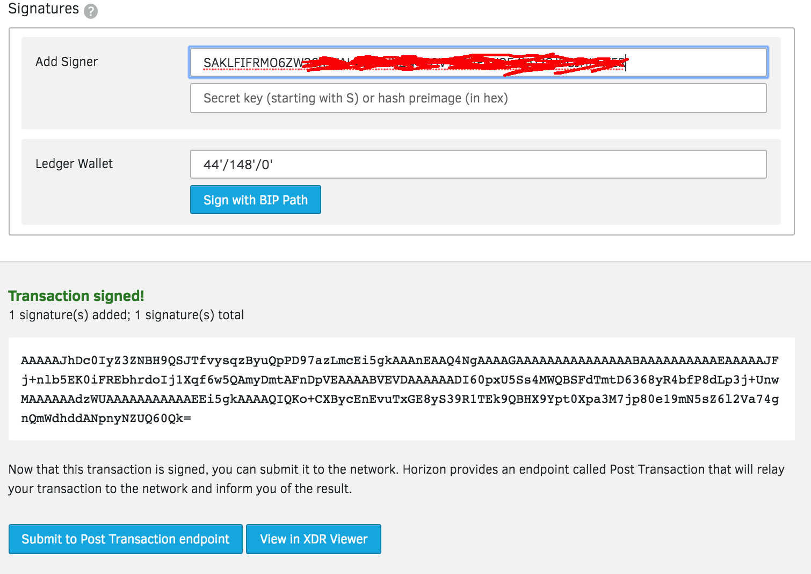
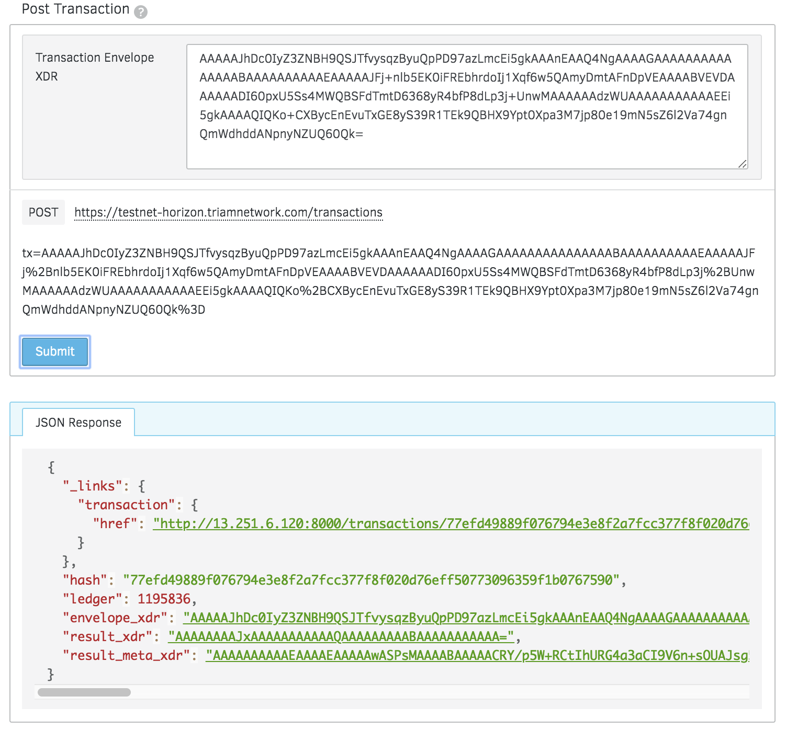

Transactions¶
Active an account¶
This operation creates and funds a new account with the specified starting balance.
Go to Transaction Builder, this is what that operation looks like:
- Source Account: Your public address
- Operation Type: Create Account
- Destination: New public key that you want to create
- Starting Balance: e.g. 40
Then sign transaction with your private key:
If all goes well, you’ll see a successful transaction like so:
Now you can check the balance of new user here
Send and Receive Money¶
Now that you have an account, you can send and receive funds through the Triam network. If you haven’t created an account yet, please follow this.
Most of the time, you’ll be sending money to someone else who has their own account.
Go to Transaction Builder, this is what that operation looks like:
- Source Account: Your public address
- Operation Type: Payment
- Destination: Your destination public address
- Asset: Native
- Amount: e.g. 20
Then sign transaction with your private key:
If all goes well, you’ll see a successful transaction like so:
Now you can check the balance of new user here
Create a trustline¶
When you hold assets in Triam, you’re actually holding credit from a particular issuer. The issuer has agreed that it will trade you its credit on the Stellar network for the corresponding asset–e.g., fiat currency, precious metal–outside of Stellar. Let’s say that Scott issues oranges as credit on the network. If you hold orange credits, you and Scott have an agreement based on trust, or a trustline: you both agree that when you give Scott an orange credit, he gives you an orange.
When you hold an asset, you must trust the issuer to properly redeem its credit. Since users of Triam will not want to trust just any issuer, accounts must explicitly trust an issuing account before they’re able to hold the issuer’s credit. In the example above, you must explicitly trust Scott before you can hold orange credits.
To trust an issuing account, you create a trustline. Trustlines are entries that persist in the Triam ledger. They track the limit for which your account trusts the issuing account and the amount of credit from the issuing account that your account currently holds.
Now go to Transaction Builder to create a trust line:
Then sign transaction with your private key:
If all goes well, you’ll see a successful transaction like so:
Transfer a token¶
Go to Transaction Builder, this is what that operation looks like:
Then sign transaction with your private key:
If all goes well, you’ll see a successful transaction like so:
